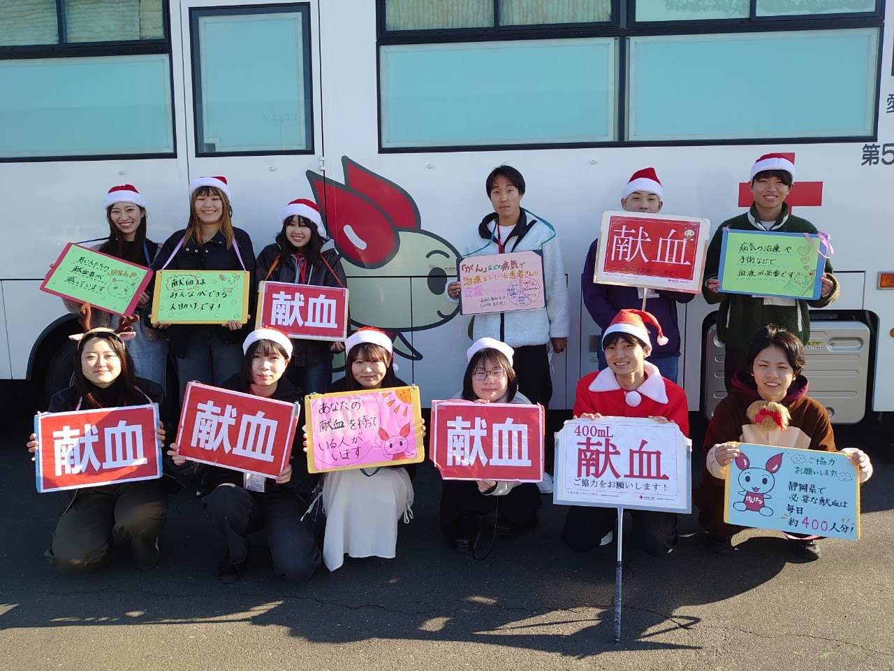
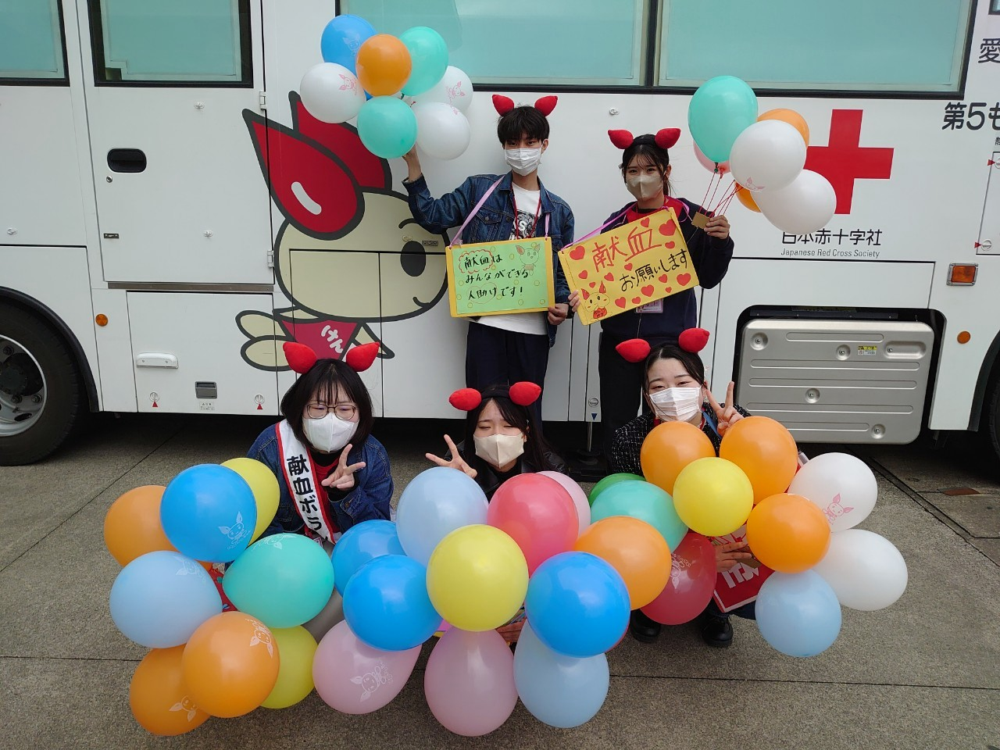

浜松学生献血推進委員会(浜松学推)とは
聖隷クリストファー大学と静岡大学浜松キャンパスの学生が中心となり、
夏の「サマー献血キャンペーン」や冬の「クリスマス献血キャンペーン」などのイベントを通して
自身が献血について理解を深めるだけでなく、会場に訪れた方にも献血の大切さを伝えるために活動を行っています!!

浜松学推の活動模様はこちらから(Instagram)
この活動に興味のある方は上のリンク先の公式InstagramからDMをお願いします!!

皆様のご協力お待ちしております!!